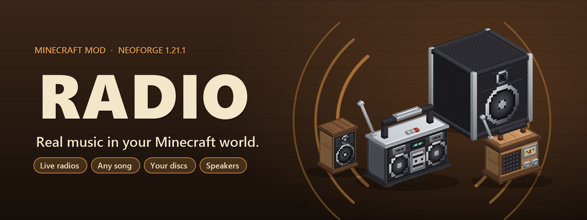
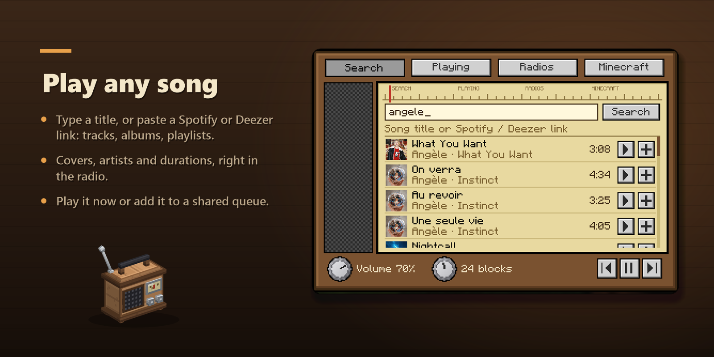
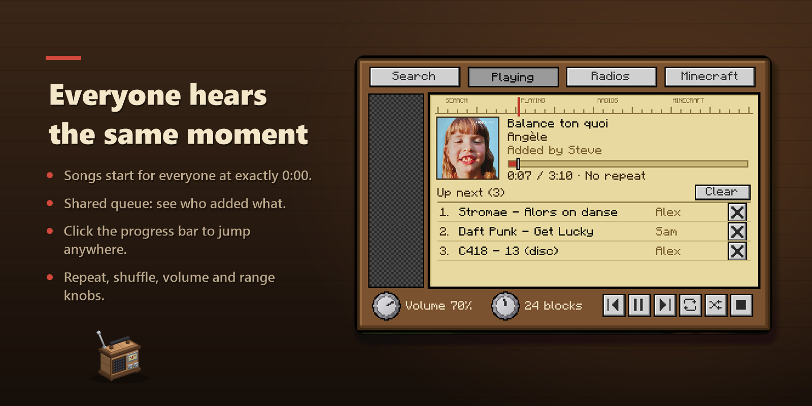
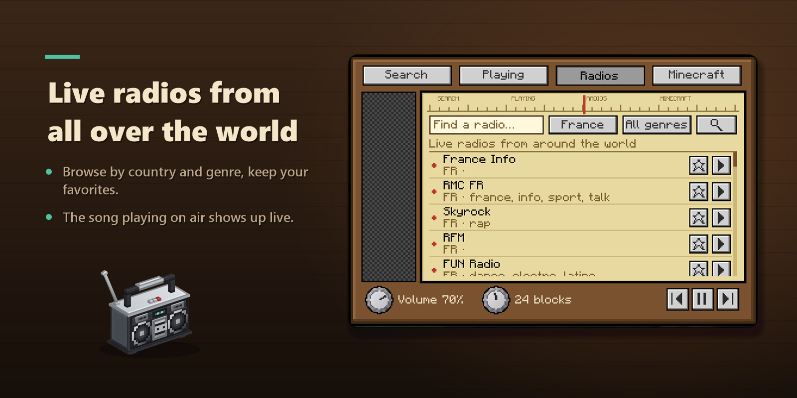
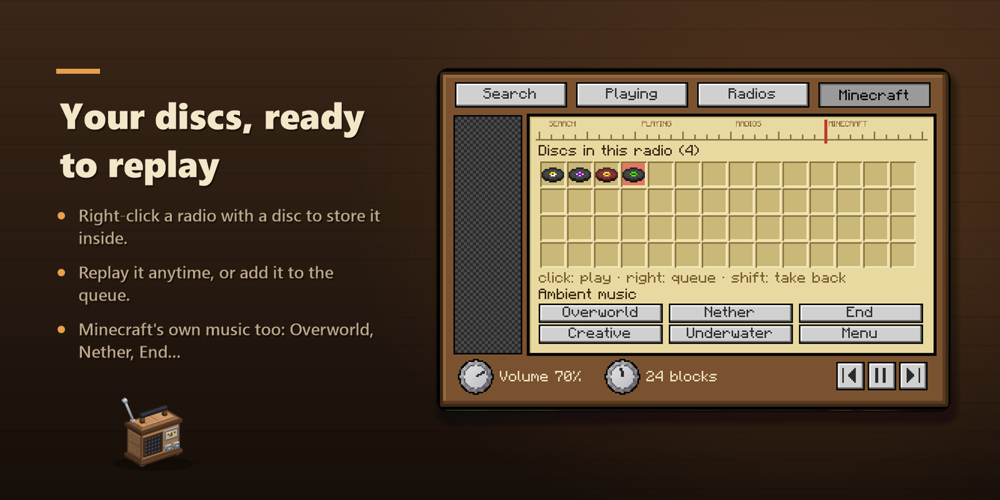
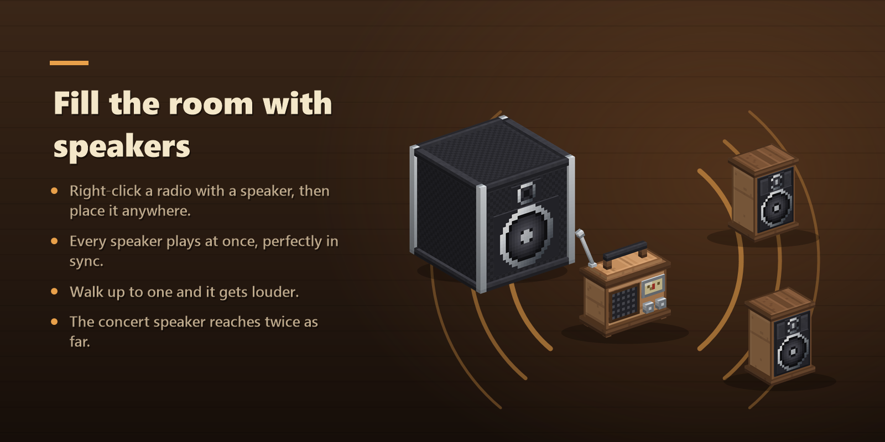
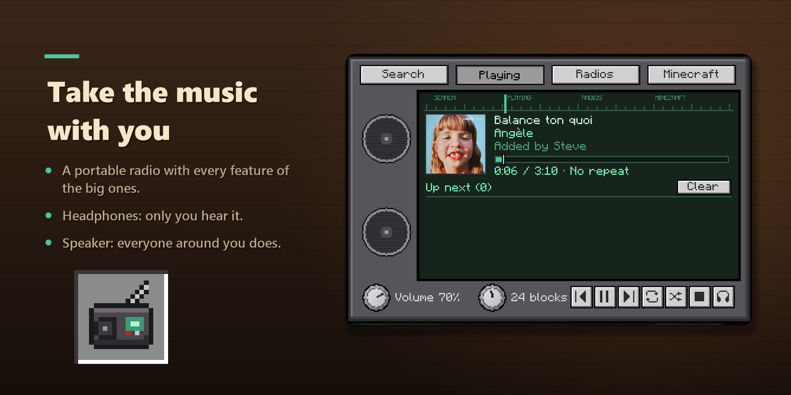
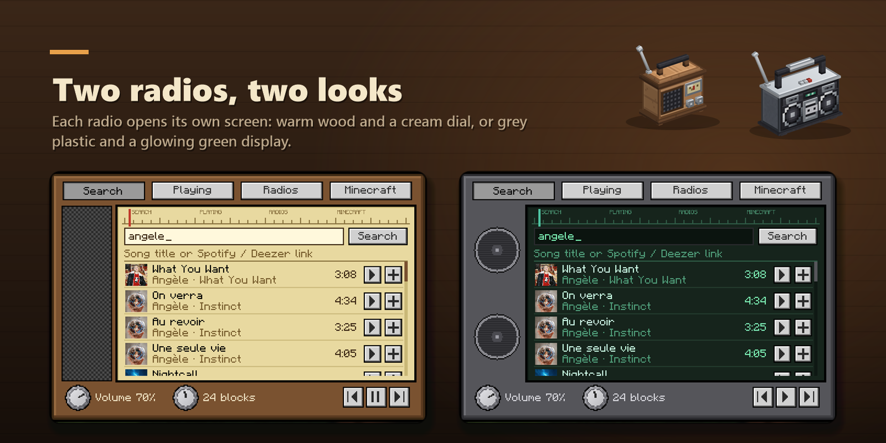

Radio adds radios you can actually listen to. Search for a song, tune in to a web radio, or play your own discs. Everyone nearby hears the same thing at the same time.
Type a song or an artist in the search tab, or paste a Spotify or Deezer link (track, album or playlist). Pick a result to play it now, or add it to the queue. The queue is shared, and you can see who added each song.

Songs start at 0:00 for everyone. If someone clicks the progress bar to skip ahead, everybody skips with them. There's repeat, shuffle, a volume knob and a range knob. The sound comes from the block, so it gets quieter as you walk away. When a new song starts, its name shows up above your hotbar.

Thousands of web radios, sorted by country and genre. Star the ones you like to keep them at the top. The song currently on air is shown in the radio.

Right-click a radio with a music disc to put it inside. It stays there, so you can play it again later or add it to the queue. Shift-click it in the list to take it back. If the radio is broken, the discs drop. The Minecraft tab also has the normal game music (Overworld, Nether, End, Creative, Underwater, Menu).

Right-click a radio while holding speakers, then place them anywhere within 64 blocks. All of them play at the same time, and the closest one is the loudest. The wooden speaker has the same range as the radio. The concert speaker goes twice as far.

Same features as the radio blocks, but in your inventory. In headphones mode only you can hear it. In speaker mode, players around you hear it while you hold it. To put a disc in, hold it in your other hand and right-click.

The wooden radio and the boombox do the same thing, but each one opens its own screen.

The recipes unlock in the recipe book once you have a note block.
| Radio | iron ingot, 4 planks, note block, redstone |
| Boombox | 5 iron ingots, 2 note blocks, redstone |
| Portable radio | 5 iron ingots, note block, redstone |
| Speaker (x2) | 8 planks around a note block |
| Concert speaker | 6 black wool, 2 iron ingots, note block |
Players (Mods menu, Radio): turn radios off, set their volume, hide song names, mute the game music near a radio.
Servers: turn off song search or web radios, choose who can place radios and who can change the music (everyone, owner and ops, or ops only), max range, max songs per player in the queue.
GPL-3.0. Uses NewPipe Extractor (GPL-3.0), Concentus, JLayer, Rhino, jsoup and protobuf-javalite.